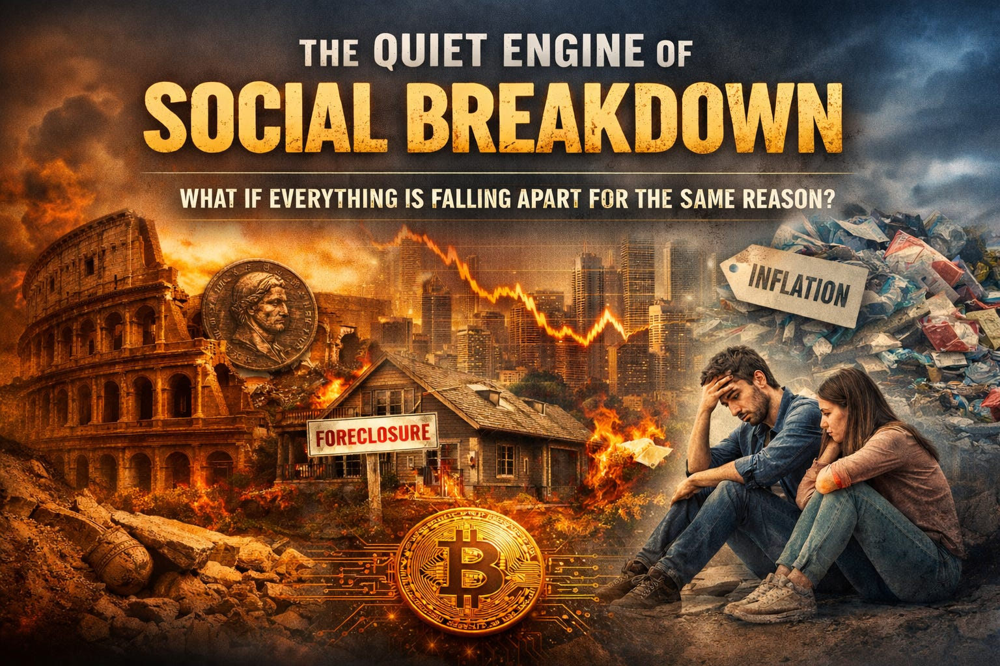

Most of us wake up every day knowing, at some level, that the money we’ve earned is quietly evaporating.

Most of us wake up every day knowing, at some level, that the money we’ve earned is quietly evaporating.
Our paychecks buy fewer groceries than they did last year. Rent and insurance rise faster than wages. Savings accounts often shrink in real terms even when we don’t spend them. This erosion doesn’t usually feel dramatic enough to be called a crisis, but it never stops. It’s constant, ambient pressure — like slowly walking uphill while being told you’re standing still.
That pressure has a name in economics: inflation — the general rise in the prices of goods and services over time. As inflation pushes prices higher, each dollar buys less and less, making budgeting and planning harder. For many households, inflation subtracts from quality of life even when headlines focus only on percentages.
“Inflation is the one form of taxation that can be imposed without legislation” (Milton Friedman)
Inflation isn’t an abstract economic term. It’s a slow, continuous transfer of future effort into present survival. It steals not just purchasing power, but predictability. It makes long-term planning feel naïve and patience feel irrational.
When money reliably loses value over time, people adapt. They have to.
Workers chase higher wages just to stay in place, even as real wage gains lag behind inflation in many sectors. Median income growth, once adjusted for rising costs, has often failed to keep pace, pushing workers to switch jobs frequently or take on additional work just to maintain living standards.
Many delay saving or investing because traditional savings yield interest far below inflation, meaning money held safely in the bank loses real value year after year.
Homeownership feels less like a life milestone and more like a speculative gamble, as housing prices and borrowing costs outpace wage growth — especially for younger buyers entering the market later in life.
Retirement planning becomes anxiety-laden, as the long-held expectation that disciplined saving will reliably fund a stable retirement feels increasingly uncertain.
Over time, this warps our relationship with time itself. Why defer gratification when tomorrow’s dollar is worth less than today’s? Why invest patiently when the rules change underneath you?
Economists have a term for this: high time preference. In plain language, a system that punishes patience trains people to stop being patient.
“People respond to incentives. The rest is commentary” (Thomas Sowell)
Once this dynamic takes hold, the consequences cascade.
Debt replaces savings as households borrow to smooth consumption under rising costs. Short-term coping replaces long-term building as people postpone education, entrepreneurship, homeownership, or family formation. Financial stress becomes chronic rather than episodic, straining mental health and relationships alike.
In many developed countries, declining birth rates now closely track housing unaffordability and long-term economic insecurity. People delay or abandon starting families not because they reject family life, but because they cannot reliably plan far enough into the future.
Economic insecurity is not just an individual experience. It reshapes society.
There is another downstream effect that receives far less attention: inflation quietly damages the environment.
When time horizons collapse, resource allocation changes.
In an inflationary system, durability becomes expensive and immediacy becomes rational. Consumers facing constant price pressure prioritize cheap, disposable goods over long-lasting ones. Repair is deferred. Quality is sacrificed. Plastic replaces wood, metal, and craftsmanship because it is cheaper upfront — even if it costs more over time, economically and environmentally.
Producers respond to the same incentives. When capital is cheap and time preference is high, businesses optimize for short production cycles, rapid turnover, and quarterly margins, not longevity, repairability, or sustainability. Products are designed to be replaced, not maintained.
Long-term environmental investments — soil restoration, durable infrastructure, nuclear power, resilient water systems — struggle to compete with short-term returns when the discount rate on the future is artificially high.
Inflation doesn’t just encourage overconsumption. It systematically misallocates resources toward waste, because the future is discounted by design.
A society that cannot plan financially for decades cannot steward ecosystems for centuries.
This is not a failure of values. It is a failure of incentives.
A surprising number of our social pathologies flow downstream from this dynamic.
Rising inequality emerges as those who already own assets — stocks, real estate, businesses — benefit from inflation, while those who rely primarily on wages fall behind.
Political polarization intensifies as economic pressure drives people to search for someone to blame. When the system feels unfair but opaque, trust erodes and factions harden.
Economic fragility becomes normalized. Boom-and-bust cycles in labor markets repeat — not because of malice, but because the monetary system expands and contracts based on centralized policy decisions rather than lived economic use.
Cheap money encourages companies to overexpand. Projects get funded not because they are durable, but because capital is abundant and inexpensive. Hiring accelerates. Optimism spreads. Then conditions tighten. Interest rates rise. Suddenly the same firms that were “investing in growth” are laying off workers and freezing hiring.
The volatility doesn’t disappear. It’s absorbed by employees. Workers are told to be “flexible,” which often means absorbing risks they did not create and reorganizing their lives around quarterly profit cycles.
These are emergent properties of monetary systems that detach money from real economic coordination.
None of this is new.
One of the clearest historical examples is the Roman Empire. As Rome’s expenditures grew — particularly military and bureaucratic costs — the state increasingly resorted to currency debasement. Silver coins were diluted with base metals. Nominal wages rose, but real purchasing power fell. Prices became unstable. Savings were wiped out. Trust in money eroded.
The social symptoms were strikingly familiar:
Rome did not fall overnight because of debasement alone. But prolonged monetary instability undermined its social cohesion and economic resilience, making it brittle under pressure.
“A nation’s coinage is its soul” (Cicero)
When money becomes a political tool rather than a coordination mechanism, time horizons collapse, incentives distort, and societies quietly trade resilience for short-term survival.
To understand why today feels uniquely strained, it helps to look at a specific turning point: 1971.
In August of that year, the United States ended the convertibility of the dollar into gold — the Nixon Shock. This marked the final break from the Bretton Woods system and the beginning of fully fiat, floating currencies.
Before 1971, money was constrained by its link to gold. Governments could not expand the money supply indefinitely without risking a loss of convertibility. Inflation existed, but long-term purchasing power was more predictable.
After 1971, several structural changes followed:
“We are all Keynesians now” (Milton Friedman)
From the early 1980s through the 2000s, interest rates steadily declined. As rates fell, asset prices rose. Housing, stocks, and retirement portfolios appreciated. The rates themselves matter less than their overall direction of change.
For Baby Boomers and many in Gen X, buying a home, saving, and investing over time reliably built wealth — often without extraordinary risk.
This is not a moral judgment. It is a structural reality.
Millennials and zoomers inherited a different system:
The rules changed — but cultural expectations often didn’t.
“Every generation lives inside a monetary regime it did not choose”
When inflation or stagnation becomes entrenched, people experiment.
From demurrage currencies like Wära in 1930s Germany to local currencies like the Totnes Pound, Lewes Pound, and BerkShares, communities repeatedly attempt to restore stability and local coordination when national systems fail them.
These experiments often work locally. And they almost always encounter the same limits: legal pressure, regulatory scrutiny, or an inability to scale under centralized monetary monopolies.
The lesson isn’t that alternatives are impossible. It’s that coordination at scale matters.
Money is not a law of nature. It is a coordination technology.
Entire industries have been transformed not through revolution, but through superior coordination tools quietly replacing inferior ones. Open-source software didn’t overthrow proprietary systems by force. It outcompeted them by working better.
Bitcoin, whatever its limitations, demonstrated for the first time that monetary rules could be enforced globally by decentralized networks rather than institutions. It didn’t just create a new asset. It expanded the design space for money itself.
“Bitcoin is not an answer. It is a question — whether money needs rulers”
Openly questioning the monetary system is still framed as dangerous or irresponsible. The implied message is that stability requires obedience — that the only alternatives are collapse or violence.
That framing is false.
There is another path: peaceful economic competition.
Build systems that work better. Adopt them voluntarily. Allow inferior systems to wither as people migrate toward something more stable, more humane, and more aligned with long-term life.
The remaining constraint is not technology. It is coordination and belief.
“Nothing is more powerful than an idea whose time has come” (Victor Hugo)
Ideas spread through networks. On average, it takes about six degrees of separation to reach nearly anyone on the planet.
If this post is widely shared and restacked, it can reach people who think seriously about systems and incentives — people like Balaji Srinivasan, Elon Musk, Vitalik Buterin, or even Donald Trump — not because of ideology, but because the problem is structural and the solution is peaceful.
We now have a reasonable path forward. Not a promise of utopia. Not a call for revolution. A testable alternative — if enough people believe in the idea and support the people building it.
This post is the first in a short series exploring that path.
The next post looks at the most important — and most misunderstood — experiment in monetary theory in recent decades, not as an investment, but as a breakthrough in how humans coordinate trust at scale.
If this resonates, consider subscribing, restacking, and sharing. Awareness is the first step. Coordination is the second.